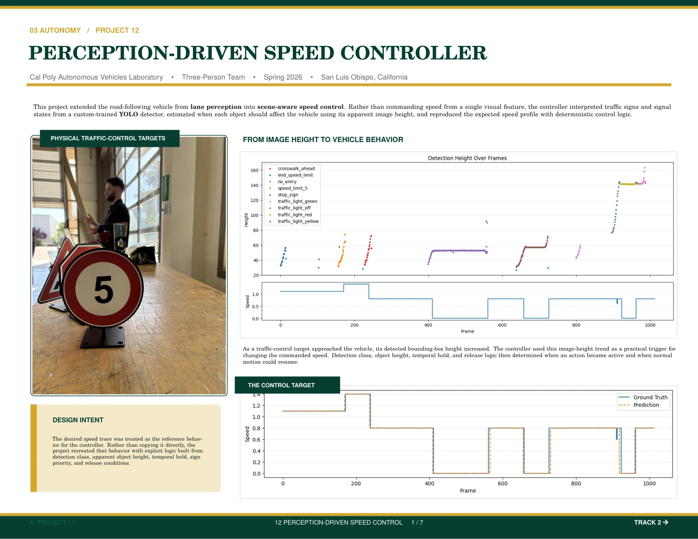
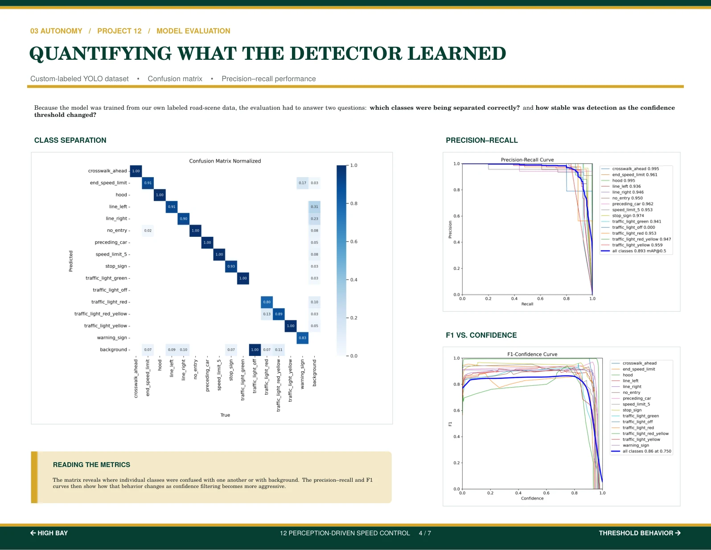
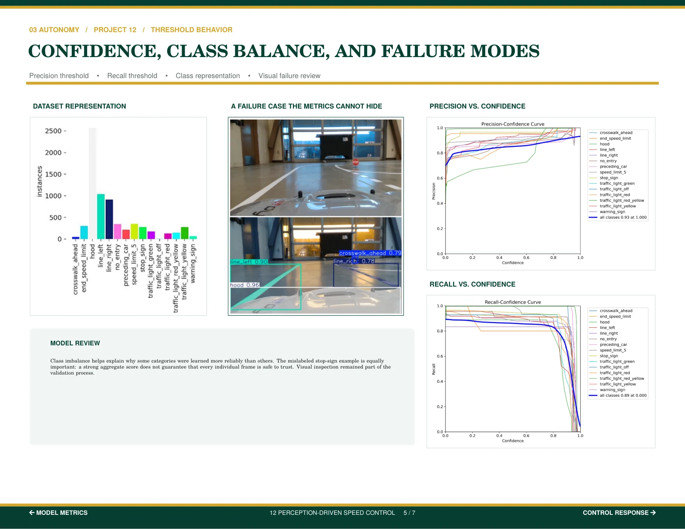
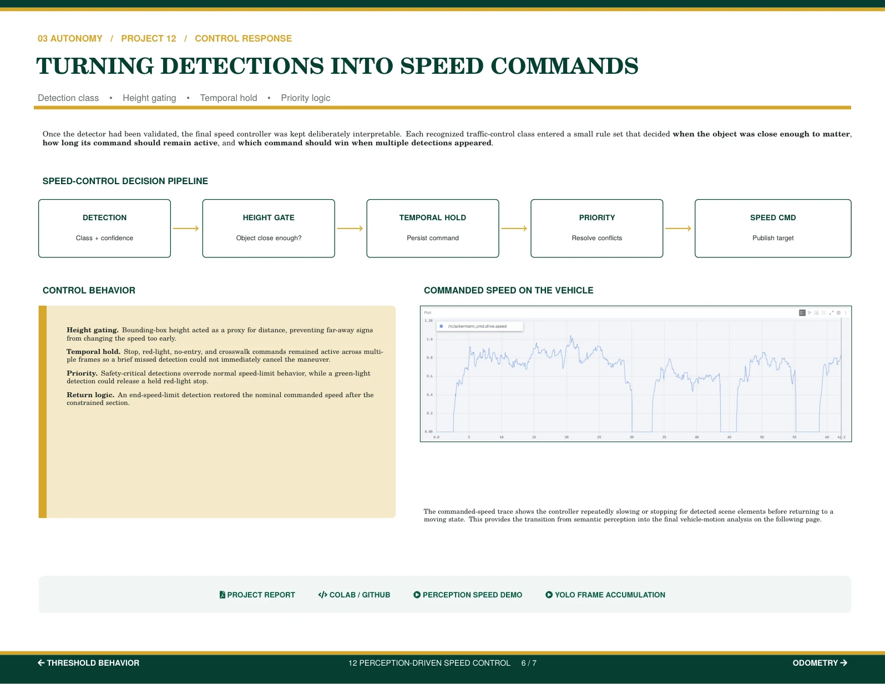

PDF PAGE 40 / 64 PDF PAGE 41 / 64
PDF PAGE 41 / 64
 PDF PAGE 42 / 64
PDF PAGE 42 / 64

PDF PAGE 43 / 64
PDF PAGE 44 / 64
PDF PAGE 45 / 64 PDF PAGE 46 / 64
PDF PAGE 46 / 64

PDF PAGE 40 / 64
PDF PAGE 41 / 64
PDF PAGE 42 / 64

PDF PAGE 43 / 64
PDF PAGE 44 / 64
PDF PAGE 45 / 64
PDF PAGE 46 / 64